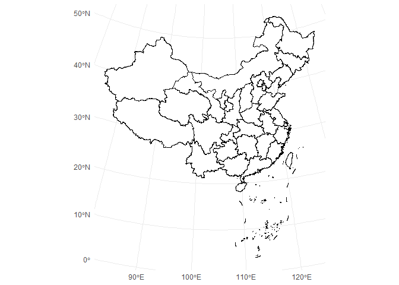
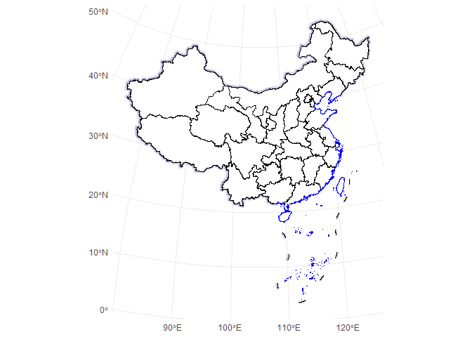
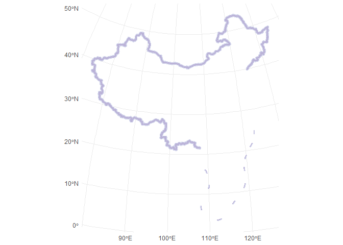
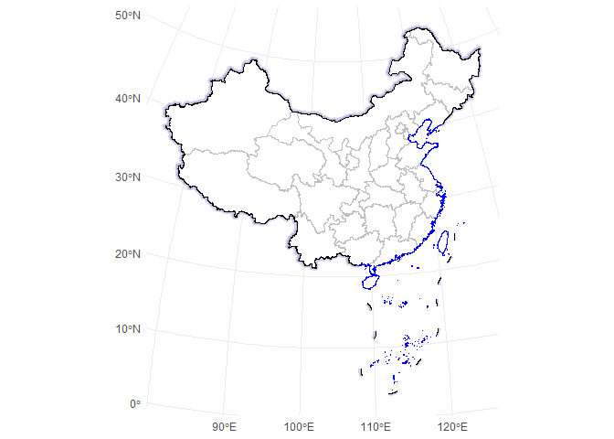

ggmapcn is a ggplot2 extension package for visualizing China’s map with customizable projections and styling. This package includes province-level map data and supports adding mainland borders, coastlines, and buffer areas, making it easy to create geographic visualizations of China.
Installation
You can install the development version of ggmapcn from GitHub with devtools:
# install.packages("devtools")
devtools::install_github("Rimagination/ggmapcn", force = TRUE)Load the Package
Basic Map Plot
To plot a map of China with province boundaries, use the geom_mapcn() function. The map uses the Azimuthal Equal Distance projection by default.
ggplot() +
geom_mapcn() +
theme_minimal()
#> Linking to GEOS 3.11.2, GDAL 3.8.2, PROJ 9.3.1; sf_use_s2() is TRUE
Custom Projection and Styling
If you want to try the Albers projection, you can customize it.
ggplot() +
geom_mapcn(crs = "+proj=aea +lat_1=25 +lat_2=47 +lat_0=0 +lon_0=105 +x_0=0 +y_0=0 +datum=WGS84 +units=m +no_defs", color = "black", fill = "white", size = 0.7) +
theme_minimal()
Adding Mainland Borders and Coastlines
Use geom_boundary_cn() to add mainland borders and coastlines to the map. You can set colors and line widths for both the mainland and coastline boundaries:
ggplot() +
geom_mapcn(fill = NA) +
geom_boundary_cn(
mainland_color = "black",
mainland_size = 0.5,
coastline_color = "skyblue",
coastline_size = 0.5
) +
theme_minimal()
Adding Buffer Zones
The geom_buffer_cn() function adds buffer zones around China’s borders. You can specify buffer distances, colors, and projections. The example below shows buffer zones with varying distances:
ggplot() +
geom_buffer_cn(mainland_dist = 40000) +
geom_buffer_cn(mainland_dist = 20000, fill = "#BBB3D8") +
theme_minimal()
Data Source
The data used in this package is sourced from Tianditu, providing province-level boundary information. This data has been processed into GeoJSON format and is integrated into the package for easy access. You’ll still need to render README.Rmd regularly, to keep README.md up-to-date. devtools::build_readme() is handy for this.
Example
Here’s a comprehensive example demonstrating how to plot province boundaries, buffer zones, and coastlines on the same map:
ggplot() +
geom_buffer_cn(mainland_dist = 40000) +
geom_buffer_cn(mainland_dist = 20000, fill = "#BBB3D8") +
geom_mapcn(fill = "white") +
geom_boundary_cn() +
theme_minimal()